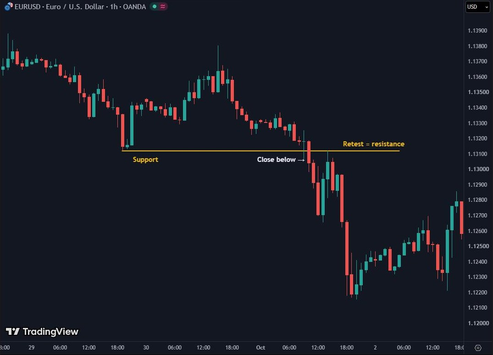

Classic Price Action
Markets are constantly in a state of uncertainty and flux, and money is made by discounting the obvious and betting on the unexpected. George Soros (attributed)
After this chapter you will be able to
- draw support and resistance levels by importance, from weekly down to hourly;
- tell a real trendline break from a false one;
- recognise regular, hidden and SMT divergence and know how much each weighs.
●4.1 Support and resistance
Support is a price level below which price struggles to fall, because buyers were strong there. Resistance is a level above which price struggles to rise, because sellers were strong there. These are the demand and supply zones from Chapter 0.2, seen as lines.
Not all levels are equal. Here is the hierarchy you will draw them by in this book, from the most important to the smallest:
| Level | Examples | Why it matters |
|---|---|---|
| 1 · Macro | Weekly high and low, monthly open, last year's high and low, round numbers (1.1000) | Every institution sees them. Reactions here are the strongest. |
| 2 · Daily structure | Previous day's high and low (PDH, PDL), daily zones | Daily targets and reference points. |
| 3 · Sessions | Asian high and low, London high and low, the opening price | That is where stops pile up during the day (Chapter 9). |
| 4 · Intraday | H4 and H1 highs and lows, M15 zones | Precision when analysing the detail. |
When is a level strong? When price has reacted to it several times, when stops (liquidity) are stacked behind it, when it lines up with another zone and when it is visible on a higher timeframe. When is it weak? When it has only one touch, when it is on M1 or M5, when it is in the middle of a range with no reason to exist.
Draw zones, not lines. The market doesn't respect the price 1.08500 to the fifth digit. It respects the area 1.0845–1.0855.
●4.2 Role reversal (S/R flip)
When price breaks a level decisively, its role often flips. Broken resistance becomes support. Broken support becomes resistance. Why? Because the sellers who sold at resistance are now losing. When price comes back there, many of them close at breakeven, i.e. they buy, and the buyers who missed the breakout are waiting for exactly that level.

The reliable sign is at steps 3 and 4: price returns to the level, fails to close back below it and shows rejection (a candle with a long lower wick, an engulfing candle or a change of structure on a lower timeframe, Chapter 6).
●4.3 Trendlines and the liquidity around them
A trendline connects a series of higher lows (rising) or lower highs (falling). It is moving support or resistance: its level shifts over time. The rules:
- At least two points to draw it. Three or more for it to be strong.
- The points are real highs or lows, not random places.
- The line runs through the wicks, not the candle bodies.
- A higher timeframe means a more important line: D1 and H4 above H1 and M15.
Score a line using the criteria below. Tick what applies:
Liquidity along the trendline. The more obvious a line, the more traders buy on it and put their stops just below it. Below the pretty four-touch trendline sits a pile of sell orders. The market often breaks it with a wick, takes the stops and comes back. That is a trap, not a breakout.
●●4.4 Divergences
A divergence occurs when price and a momentum indicator (for example RSI) contradict each other. Price makes a new high and RSI doesn't. That suggests the force behind the move is fading. A divergence is additional confirmation, never a reason on its own.
| Type | Price | Indicator | Suggests |
|---|---|---|---|
| Regular bullish | Lower low | Higher low | Possible reversal up |
| Regular bearish | Higher high | Lower high | Possible reversal down |
| Hidden bullish | Higher low | Lower low | Continuation up |
| Hidden bearish | Lower high | Higher high | Continuation down |
SMT divergence is different: it compares two correlated pairs. EURUSD and GBPUSD usually move together. If EURUSD makes a new low and GBPUSD doesn't, the dollar is not as strong as it looks in EURUSD. The weaker pair is often the one where stops have just been taken. The stronger one shows the real direction.
RSI above 70 means “overbought”, so sell.
In a strong trend RSI can stay above 70 for weeks. Selling just because of the number is a bet against the trend. A divergence matters only at an important level and in the context of structure.
●●4.5 Why SMC builds on this rather than replacing it
In Part II you will meet Smart Money Concepts (SMC): order blocks, FVGs, liquidity sweeps. Some present them as something completely new. They aren't. They are a more precise vocabulary for the same things you see in this chapter:
| Classic Price Action | SMC (Part II) | What SMC adds |
|---|---|---|
| Demand / supply zone | Order block | The exact candle the move started from |
| Gap, imbalance | Fair Value Gap (FVG) | Exact boundaries from three candles |
| False break | Liquidity sweep | Why it happens: stops are liquidity |
| Trend break | BOS / CHoCH / MSS | A rule for the close, not the wick |
| Support and resistance | BSL / SSL, PDH / PDL | Which levels are magnets for price |
New names don't make the market new. If you understand demand, supply and stops, SMC will look like an old friend in a new suit.
●●4.6 Frame-by-frame replay
An S/R flip on one chart: resistance, break, retest, continuation.
Drill
Press the line on the chart or the button. You get one try per question.
What you take from Dossier 04
- Levels have a hierarchy: macro, daily, session, intraday. Draw them top-down and as zones.
- A broken level often changes its role. The signal is in the retest, not the break.
- An obvious trendline attracts stops. A wick break is a trap; a break with a close and a retest is more serious.
- A divergence is confirmation, not a reason. SMT compares two pairs.
- SMC is a more precise vocabulary for the same logic.
Checklist before the next chapter
Test yourself
Easy · 5 questions
Intermediate · 3 questions
Experienced Trader level · 1 scenario
No single right answerEURUSD H4: a rising trendline with four touches over two weeks. Below it, at 1.0790, is last week's low. On H1 price makes a lower low at 1.0802 while RSI makes a higher low. The break below the trendline is a wick; the H1 candle closes back above the line.
Task: what do you see? Where is the liquidity? What might have happened with the wick? Write scenario A and B and what invalidates each.
- An obvious four-touch trendline: there are stops below it. Further down, below 1.0790, there are stops under the weekly low (level 1).
- The wick below the line and the close above it suggest the stops under the line were taken. The regular bullish divergence on H1 supports the idea that the selling pressure is fading.
- Scenario A: price stays above the line and makes a higher high on H1. Invalidation: an H1 close below 1.0802.
- Scenario B: this is only the first step; price goes back below the line and heads to 1.0790, where the bigger liquidity is. Invalidation of B: a strong close above the last H1 high.
- The divergence alone decides nothing. Chapter 6 on structure will give you the rule for when the picture has changed.